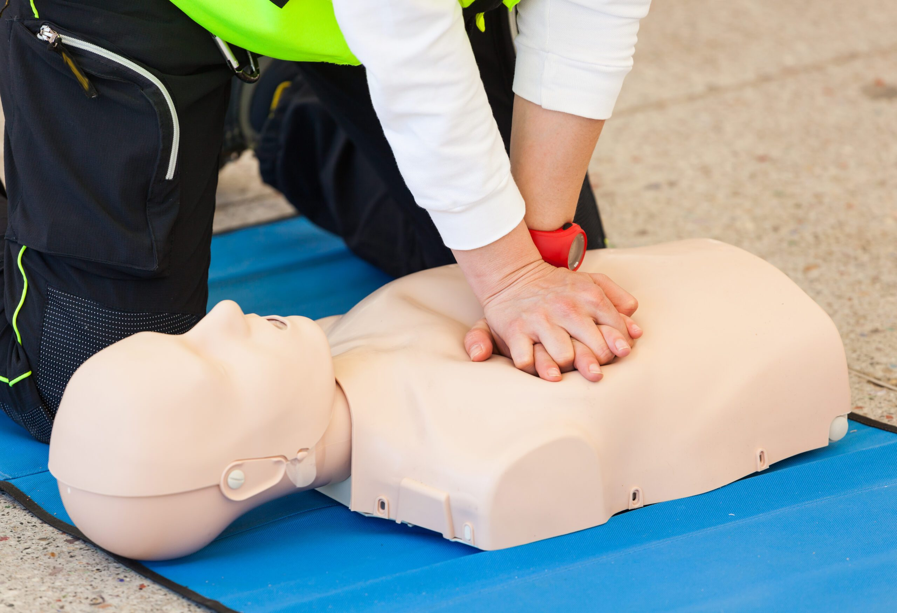

Across many parts of Africa, emergency medical services (EMS) are either stretched thin, delayed by infrastructure challenges, or simply unavailable in rural and underserved areas. When an emergency strikes, the minutes between injury and medical care are crucial. This is why empowering everyday people with first aid education is not just helpful—it’s a matter of life and death.
1. Bridging the Gap in Emergency Response
In many urban areas, traffic congestion can delay ambulances, while in rural settings, the sheer distance to the nearest hospital can be a barrier. Grassroots first aid training turns community members into immediate responders. When individuals know how to control bleeding, clear an airway, or perform CPR, they can sustain a patient's life until professional help arrives or transport can be arranged.
2. Combating Preventable Deaths
Many fatalities resulting from accidents, sudden cardiac arrests, or severe injuries are preventable with timely intervention. Basic life support skills—such as proper wound management and the Heimlich maneuver—empower communities to tackle emergencies head-on, drastically reducing mortality rates from common accidents.
"First aid is the bridge between a critical incident and professional medical care. In many communities, it is the only bridge available."
3. Cultivating a Culture of Safety
When community members participate in first aid and CPR training, it fosters a proactive mindset regarding health and safety. People become more aware of potential hazards in their homes, workplaces, and neighborhoods. This shift not only prepares individuals to act in an emergency but also encourages preventative measures that keep communities safer overall.
4. Empowering the Youth
Bringing first aid education into schools equips the next generation with vital skills. Children and teenagers are often the first to witness emergencies involving their peers or family members. Teaching them how to respond calmly and effectively builds their confidence and creates a lifelong foundation of health literacy and civic responsibility.
5. Strengthening Community Resilience
Communities trained in first aid are more self-reliant. Whether facing a localized accident or a broader crisis, having a network of skilled individuals means that the community can organize and respond swiftly. This resilience is key to mitigating the impact of emergencies and supporting recovery efforts.
At HeartSavers Africa, our mission is to ensure that critical life-saving skills are accessible to everyone, regardless of their background or location. By bringing free CPR and first aid training directly to schools and neighborhoods, we are building stronger, safer, and more resilient communities across Nigeria and beyond. Find an upcoming training near you →